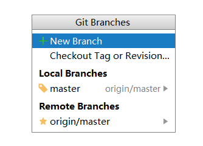
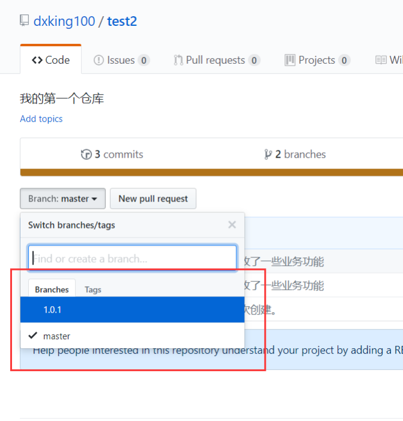
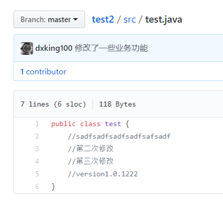

IDEA 项目上传到github
2018年2月22日
12:00
目录：
1.上传项目的条件
2.目的
3.从idea创建项目上传到github
4.从github下载到本地
5.下载与更新代码
6.创建分支
7.提交代码到分支
8.分并分支
9.对比代码
条件：
1.在github创建 账号
2.目的：
更好地管理原代码，实现多人任务开发与版本控制管理
3.从idea创建项目上传到github
在些之前会让你登录github账号，从而绑定
创建仓库成功后

选择上传的文件。
上传成功后，登入github
就会发现，你的项目己经成功提交上去github了。
4.从github中下载项目
创库地址，下载的目标地址
注：下载后，不要从ide里直接打开，因为可能会报错，还是从idea重新打开project.
请选 择delete existing project and improt.这样它才会重新配置项目。
5.下载与更新代码
所有的与git关联的项目，右击后都会能看到
这是用于管理项目的文件，用于提交与更新代码。
当你修改代码后，点击

你会看到你修改过的代码： 然后填写描述，就能提交到本地的仓库。

点击pull就是从github更新代码
点击push就是把本地仓库的代码提交到github
提交宛成后，便在github看到对应的修改

6.创建分支
右击项目

输入分支名
然后击点git-->push,提交到github
打开github就能看见对应的新建的分支，分支是原来的复制品，目的是在迭代更新或修改时，不影响主项目。
新的开发，交由分支版本进行。

7.提交代码到分支
一般情况下，创建分支后，不会直接对主项目进行修改，只会对分支进行开发。
当然也有例外，例如有些功司喜欢在旧版本进行修改。

修改对应的分支名称，就能上传到对应的分支上。
8.合并分支
先把你写到的代码提交到github中先。
在idea的右下角见到
先把主合并分支给checkout下来
然后再选择被合并的子分支
选择merge
然后重复第5步
然后在github里就看到子项目1.0.1与主项目代码进行合并了。

这样主分支就合并了子分支的代码了。
9.代码对比
选择版本

就会查看到不一样的文件有那些
前后对比。